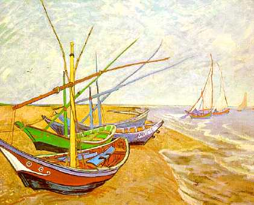

| Gone Fishing! | |
|  |
Imagine you are the skipper of a fishing boat, making a living by fishing on Lake Anderson. You have a boat and an initial capital fund in the bank of €10000. Each time you leave harbour, you may invest in fishing gear (a net, radar to search out fish, or whatever). The size of your catch will depend roughly on the amount you invest. However, it also depends on the number of fish in the lake (which will decrease as you and other fishers catch fish, and increase as the fish breed). The amount of profit you make depends on the size of your catch, the market price of fish, which will go down if there is a glut of fish on the market and up if there is a scarcity, and on your expenses. You will have to pay harbour fees and, of course, fund your investment. You will need to consider conservation - if you and other fishers catch all the fish now, there will be none left to breed and future catches will be poor. First, you must register yourself and your boat with the OFFISH, the Fishing Authority. Then you can go fishing. At any time, you can stop fishing to take a holiday, and return later. Good luck! |
| Register with the Fish Authority: | |
| Gone Fishing! was designed and created by Nigel Gilbert at the Centre for Research in Social Simulation at the University of Surrey in 2001. Version 1.5. ©2005 | |